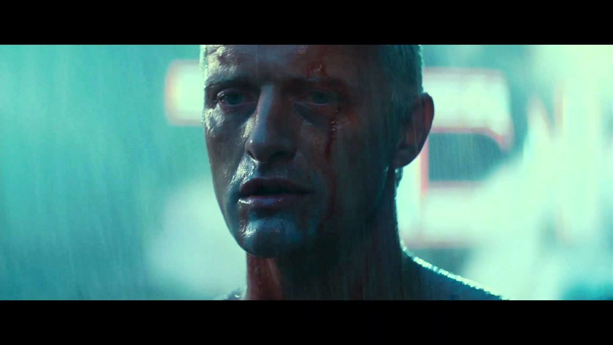

In-Depth Sci-Fi: Blader Runner
By Harrison Chachko

“I’ve seen things you people wouldn’t believe. Attack ships on fire off the shoulder of Orion. I watched C-beams glitter in the dark near the Tannhauser gate. All those moments will be lost in time, like tears in rain.”
Our first sci-fi in-depth feature focuses on none other than the original Blade Runner, first released in 1982 and directed by the infamous Ridley Scott. The film is without a doubt one of the most remarkable and impactful works released for cinema, even leading to another critical success with its 2017 sequel, Blade Runner: 2049. The motion picture has several connections to AI with its characters, themes, and overall narrative. I’ll be analysing what exactly makes Blade Runner so iconic, as well as its significance with artificial intelligence in pop culture (minor spoilers ahead!).
The setting of Blade Runner takes place on Earth in the year 2019, albeit much more technologically advanced than reality. The plot focuses on protagonist Rick Deckard, portrayed by Harrison Ford, ordered to track down and decommission beings known as Replicants: robots that sound and look identical to humans, meant to do whatever tasks they are programmed to complete. As the narrative progresses, the line between human and Replicant blurs, with developments heavily impacting both the narrative and the viewer.
The film’s presentation is quite possibly my favorite aspect of the science fiction classic. Despite being decades since its initial release, the motion picture still manages to be immersive in terms of portraying Scott’s futuristic vision. The only exception to this is the occasional 80’s-esq monitors being used in the year 2019, showing how much our vision of technology has evolved since 1982. However, any visual discrepancy is immediately overshadowed by the auditory masterpiece that is the film’s soundtrack, composed by Vangelis. Listening to the tracks alone can make those listening feel like they are in another world, and that feeling is only enhanced after watching the film. At some points, the music varies from sounding like smooth jazz or at other times haunting through its vocals, all done with the purpose of reminding you the kind of world Blade Runner is: a dystopia that's filled with depth and spirit.
It’s an understatement to say that Blade Runner still holds up in the current day, as it manages to get better with age. With every advancement our society makes towards robotics and artificial consciousness, the film challenges viewers to define the difference between humans and machines capable of thought. Blade Runner is a testament that a filmmaker's vision can be limited by the technology of their time, and that’s not so different from the progression of AI over the years. AI can be a fairly simple concept to envision, at least from the perspective of the user, but can be incredibly difficult to develop without the proper skills or technology. Scott certainly had his own understanding of AI in Blade Runner, and it became a necessary piece in the narrative.
AI is centered around the philosophical beliefs presented in Blade Runner and is perhaps what stays with viewers the most due to its thought provoking nature. Artificial consciousness, the idea of artificial beings gaining something close to free will, is probably the most impactful AI concept presented in the film. These concepts are mainly attributed to the Replicants and the actions they commit in order to be free, which contradict the very reason they were created. At many instances throughout the film it is almost impossible to distinguish the difference between the machines and humans without knowing it beforehand, which I believe was intentional. Replicants are designed around AI as they are meant to replicate human behavior, hence their name.
The film presents a moral dilemma: should artificial beings be treated on a similar scale to actual lives? Are they simply tools made to make our lives easier, or something more? Of course, current AI is not nearly as advanced as Blade Runner portrays it to be, but that may not be the case in a decade or two. Whenever the technology reaches the point where artificial consciousness is achieved, the concerns presented in Blade Runner will certainly be echoed.